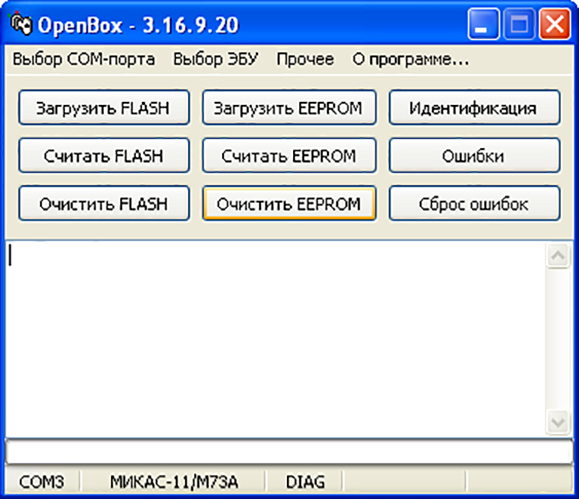

Бесплатные программы для чип-тюнинга ВАЗ.
Дата: 07.09.2020
В прошлой
статье мы описали необходимое оборудование для прошивки ВАЗ.
Сегодня опишем бесплатные программы для чип-тюнинга этих автомобилей до 2010 года.
На первом месте программа Chiploader 1.97.7.

Его можно скачать
здесь. Из вазовских блоков поддерживает: Январь 5.1, VS 5.1, MP 7.0, Январь 7.2, Январь 7.2+, Bosch 7.9.7 и Bosch 7.9.7+. Сначала нужно точно узнать какой именно ЭБУ установлен на автомобиле. Для этого извлеките его и положите на стол. Обычно на этикетке написано какая прошивка установлена в данном ЭБУ. В этом списке вы можете узнать к какому типу она относится. Затем смотрим из списка распиновку для этого эбу. Берем подключаемся к пинам ЭБУ заранее подготовленными проводками. Для пущей уверенности отнеситесь внимательнее к выводам +12В и Массе , так как неправильное подключение может вывести из строя процессор ЭБУ. Затем подключите к-линию и пин "разрешение программирования"(если такое имеется). После всех подключений ЭБУ нужно подключить проводки k K-LINE адаптеру по томву же принципу, найти +12В, Массу и к-линию. Внимательно всё проверяем и подключаем в USB разъем компьютера K-LINE адаптер. Теперь подаем питание на общие +12В и Массу. Запускаем программу Chiploader. В настройках нужно выбрать Тест К-Лайн адаптера. Если тест прошёл успешно, то выбираем нужный нам тип ЭБУ. Нажимаем кнопку "Паспорт" и затем "Считать Flash". После считывания сохраняем прошивку на комп. Таким же образом можно загрузить и EEPROM. Измененную или тюнинговую прошивку закачиваем с помощью кнопок "Загрузить Flash".
Combiloader версии 2.1.8.

Этот загрузчик имеет возможность прошивать ЭБУ ВАЗ Январь 5.1, VS 5.1, MP 7.0, Январь 7.2, Bosch 7.9.7. Весь процесс прошивки такой же как и у Chiploader 1.97.7 , за исключением некоторых моментов. Для работы этого загрузчика необходимо выставить скорость COM порта. Идем в диспетчер устройств Windows. Находим наш K-LINE адаптер и щелкаем по нему правой кнопкой мыши. Ищём вкладку дополнительно и находим где задаётся его номер, делаем его COM1. Выставляем ему скорость работы 38400 на вкладке Параметры порта. Далее идем в настройки Combiloader и там тоже меняем скорость и выставляем нужный COM port. Кнопки чтения и записи соответственно вычитывают и записывают прошивку .
OpenBox 3.16.9.

Эта программа -загрузчик работает уже с другими ЭБУ семейства ВАЗ: Январь 7.2+, M73-Ителма, M73-Автел,Bosch 797+, Bosch ME797. Процесс записи и чтения прошивки достаточно прост. Здесь всё интуитивно понятно. Однако стоит помнить , что блоки М73 могут быть "закрытые" и "открытые". Смотреть нужно по версии бутлоадера. Который можно посмотреть в скачанной прошивке, открыв её Hex редактором. Вот список прошивок , в которых обозначены версии бутлоадера: 0799 — "открытый" ЭБУ A(I)317DA02, A(I)317DA03, A(I)308DA02 0800 — "открытый" ЭБУ A(I)308DB03, A(I)308DB04 0823 — "закрытый" ЭБУ I373DA01, A(I)373DA02 0848 — "закрытый" ЭБУ A(I)317DB04, A(I)373CA01, I373CA02 0849 — "закрытый" ЭБУ A(I)373DB04. Желательно на основе скачанной прошивки закачивать в блок тюнинговую с такими же идентификаторами. Этих программ будет вполне достаточно для программирования ЭБУ ВАЗ до 2010 года выпуска.